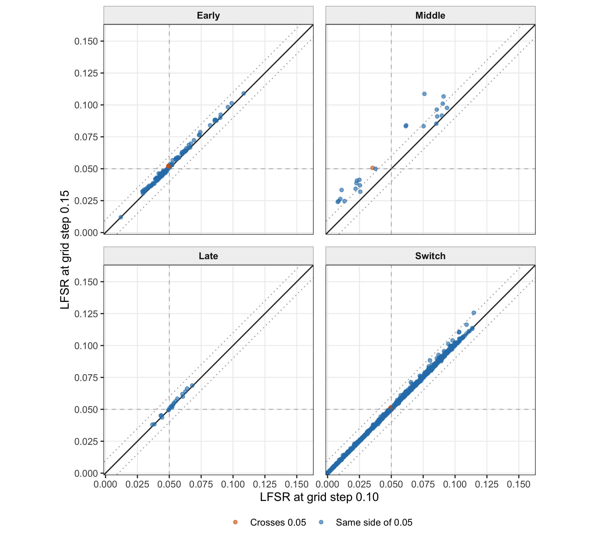
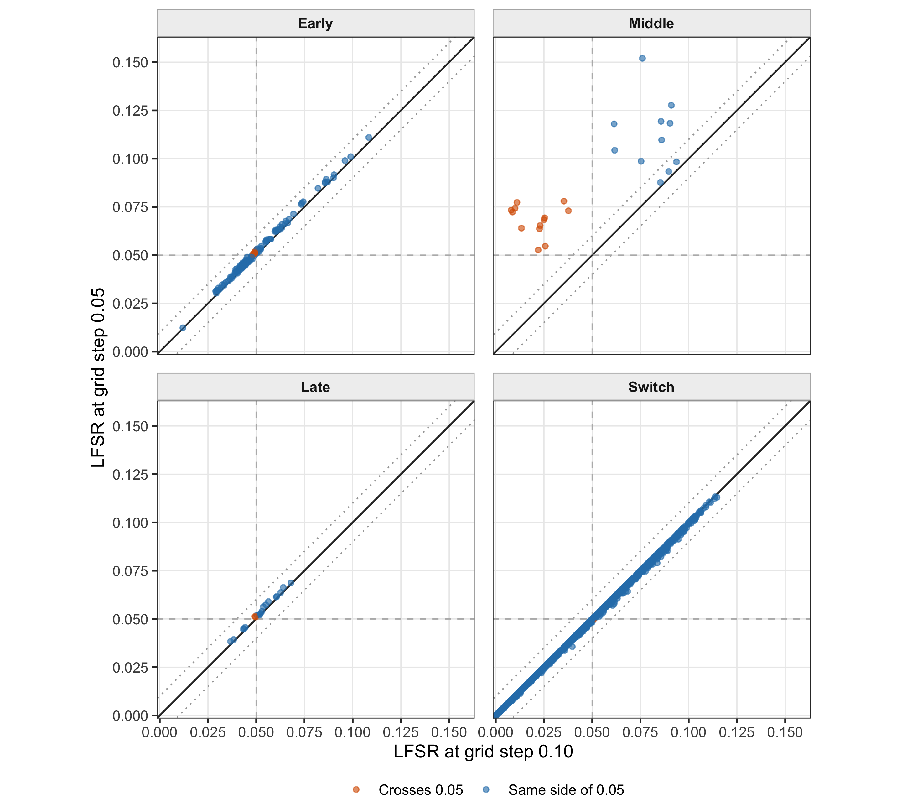
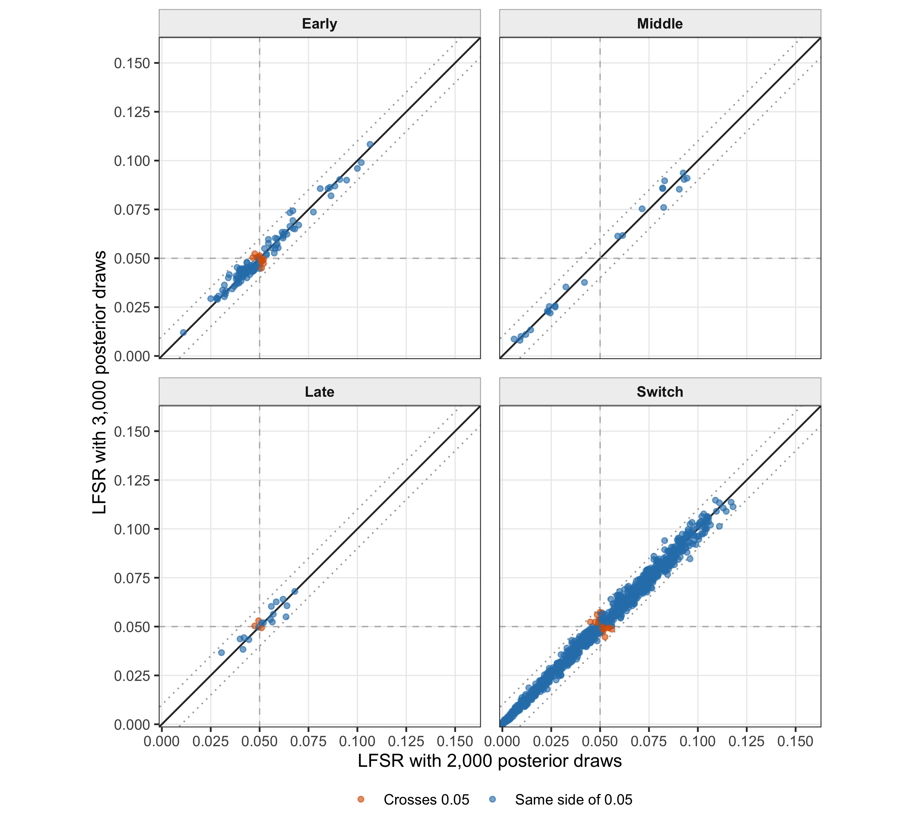

Last updated: 2026-08-24
Checks: 6 1
Knit directory: coderepo-local/
This reproducible R Markdown analysis was created with workflowr (version 1.7.2). The Checks tab describes the reproducibility checks that were applied when the results were created. The Past versions tab lists the development history.
The R Markdown is untracked by Git. To know which version of the R
Markdown file created these results, you’ll want to first commit it to
the Git repo. If you’re still working on the analysis, you can ignore
this warning. When you’re finished, you can run
wflow_publish to commit the R Markdown file and build the
HTML.
Great job! The global environment was empty. Objects defined in the global environment can affect the analysis in your R Markdown file in unknown ways. For reproduciblity it’s best to always run the code in an empty environment.
The command set.seed(20251109) was run prior to running
the code in the R Markdown file. Setting a seed ensures that any results
that rely on randomness, e.g. subsampling or permutations, are
reproducible.
Great job! Recording the operating system, R version, and package versions is critical for reproducibility.
Nice! There were no cached chunks for this analysis, so you can be confident that you successfully produced the results during this run.
Great job! Using relative paths to the files within your workflowr project makes it easier to run your code on other machines.
Great! You are using Git for version control. Tracking code development and connecting the code version to the results is critical for reproducibility.
The results in this page were generated with repository version c87957a. See the Past versions tab to see a history of the changes made to the R Markdown and HTML files.
Note that you need to be careful to ensure that all relevant files for
the analysis have been committed to Git prior to generating the results
(you can use wflow_publish or
wflow_git_commit). workflowr only checks the R Markdown
file, but you know if there are other scripts or data files that it
depends on. Below is the status of the Git repository when the results
were generated:
Ignored files:
Ignored: .DS_Store
Ignored: .Rhistory
Ignored: .Rproj.user/
Ignored: Rplots.pdf
Ignored: analysis/.DS_Store
Ignored: analysis/.Rhistory
Ignored: code/.DS_Store
Ignored: code/.Rhistory
Ignored: code/revision_simulations/.DS_Store
Ignored: data/appendixB/
Ignored: data/dynamic_eQTL_real/
Ignored: data/revision_simulations/
Ignored: data/toy_example/
Ignored: output/dynamic_eQTL_real/
Ignored: output/pdf/
Ignored: output/playwright/
Ignored: output/revision_simulations/
Ignored: scripts/
Untracked files:
Untracked: analysis/dynamic_eQTL_real_cl.rmd
Untracked: analysis/nonlinear_dynamic_eQTL_real_cl.Rmd
Untracked: analysis/revision_enhancer_enrichment_cl.rmd
Untracked: analysis/revision_internal_correlated_permutation_discoveries.rmd
Untracked: analysis/revision_internal_evaluation_grid_mc_sensitivity.rmd
Untracked: analysis/revision_internal_evaluation_grid_mc_sensitivity_middle_4_11.rmd
Untracked: analysis/revision_internal_fash_cl_manuscript_impact.rmd
Untracked: analysis/revision_internal_fash_discovery_variant_count.rmd
Untracked: analysis/revision_internal_fash_linear_real_data_ablation.rmd
Untracked: analysis/revision_internal_fashr_correlated_observation_model.rmd
Untracked: analysis/revision_internal_matched_fash_linear_real_data.rmd
Untracked: analysis/revision_internal_matched_fash_linear_real_data_cl.rmd
Untracked: analysis/revision_internal_r1_normality_assumption.rmd
Untracked: analysis/revision_internal_small_m_clean_working_null_sensitivity.rmd
Untracked: analysis/revision_internal_small_m_matched_null_eb_sensitivity.rmd
Untracked: analysis/revision_internal_twenty_variant_per_gene_refit.rmd
Untracked: apps/
Untracked: code/02_dyn_lfsr.R
Untracked: code/02_dyn_lfsr.sbatch
Untracked: code/revision_simulations/appendix_b/
Untracked: code/revision_simulations/internal/cl_pc_real_data_pages/
Untracked: code/revision_simulations/internal/correlated_permutation_discoveries/
Untracked: code/revision_simulations/internal/covariance_estimation/run_design_propagated_null_correlation.R
Untracked: code/revision_simulations/internal/covariance_estimation/run_multigene_null_beta_covariance_exploration.R
Untracked: code/revision_simulations/internal/early_window_sensitivity/
Untracked: code/revision_simulations/internal/evaluation_grid_sensitivity/
Untracked: code/revision_simulations/internal/fash_cl_manuscript_impact/
Untracked: code/revision_simulations/internal/fash_discovery_variant_count/
Untracked: code/revision_simulations/internal/fash_knockoff/
Untracked: code/revision_simulations/internal/fash_linear_real_data_ablation/
Untracked: code/revision_simulations/internal/fash_strober_enhancer_comparison_cl/
Untracked: code/revision_simulations/internal/matched_fash_linear_real_data/
Untracked: code/revision_simulations/internal/matched_fash_linear_real_data_cl/
Untracked: code/revision_simulations/internal/r0_linear_iwp_power_mechanism/
Untracked: code/revision_simulations/internal/r0_linear_summary_statistic/
Untracked: code/revision_simulations/internal/r1_known_truth_genotype_permutation/
Untracked: code/revision_simulations/internal/r1_linear_truth_composition/
Untracked: code/revision_simulations/internal/r1_normality_assumption/
Untracked: code/revision_simulations/internal/r3_middle_calibration/
Untracked: code/revision_simulations/internal/residual_correlation_fash/
Untracked: code/revision_simulations/internal/selected_signal_genotype_permutation/
Untracked: code/revision_simulations/r1_r2_fashr0143/
Untracked: code/revision_simulations/r3_r4_fashr0143/
Untracked: code/revision_simulations/r4_correlated_errors/real_genotype_r1_helpers.R
Untracked: code/revision_simulations/r5_one_variant_per_gene/
Untracked: code/revision_simulations/shared/build_real_genotype_one_per_gene_cache.R
Untracked: code/revision_simulations/shared/real_genotype_one_per_gene.R
Untracked: code/revision_simulations/shared/test_linear_mixture_fash.R
Untracked: code/revision_simulations/shared/test_real_genotype_one_per_gene.R
Untracked: code/revision_simulations/shared/test_relative_location_clearance.R
Untracked: code/revision_simulations/shared/test_temporal_category_mixture.R
Untracked: code/revision_simulations/shared/validate_r1_r2_linear_mixture_pairing.R
Untracked: code/revision_simulations/shared/validate_r1_r2_real_genotype_pairing.R
Untracked: figure/
Unstaged changes:
Modified: analysis/appendixB.rmd
Modified: analysis/dynamic_eQTL_real.rmd
Modified: analysis/dynamic_eQTL_real_full.rmd
Modified: analysis/index.Rmd
Modified: analysis/nonlinear_dynamic_eQTL_real.Rmd
Modified: analysis/nonlinear_dynamic_eQTL_real_full.rmd
Modified: analysis/revision_balanced_variant_thinning.rmd
Modified: analysis/revision_combined_spiky_genotype_simulation.rmd
Modified: analysis/revision_correlated_error_simulation.rmd
Modified: analysis/revision_enhancer_enrichment.rmd
Modified: analysis/revision_functional_testing_simulation.rmd
Modified: analysis/revision_genotype_level_simulation.rmd
Modified: code/revision_simulations/README.md
Modified: code/revision_simulations/internal/covariance_estimation/run_global_pca_factor_visualization.R
Modified: code/revision_simulations/internal/fash_strober_enhancer_comparison/enrichment_api.R
Modified: code/revision_simulations/internal/fash_strober_enhancer_comparison/reporting.R
Modified: code/revision_simulations/internal/fash_strober_enhancer_comparison/run_fash_strober_enhancer_comparison.R
Modified: code/revision_simulations/r1_random_bspline/reporting.R
Modified: code/revision_simulations/r1_random_bspline/run_random_bspline_mc_replication.R
Modified: code/revision_simulations/r2_spiky_transient/reporting.R
Modified: code/revision_simulations/r2_spiky_transient/run_combined_spiky_genotype_simulation.R
Modified: code/revision_simulations/r2_spiky_transient/run_spiky_transient_mc_replication.R
Modified: code/revision_simulations/r3_functional_testing/reporting.R
Modified: code/revision_simulations/r3_functional_testing/run_matched_functional_testing_mc_replication.R
Modified: code/revision_simulations/r4_correlated_errors/estimate_real_data_error_correlations.R
Modified: code/revision_simulations/r4_correlated_errors/reporting.R
Modified: code/revision_simulations/r4_correlated_errors/run_full_empirical_correlation_mc.R
Modified: code/revision_simulations/r4_correlated_errors/run_lag1_correlation_sweep.R
Modified: code/revision_simulations/shared/simulation_functions.R
Note that any generated files, e.g. HTML, png, CSS, etc., are not included in this status report because it is ok for generated content to have uncommitted changes.
There are no past versions. Publish this analysis with
wflow_publish() to start tracking its development.
This temporary comparison changes only the Middle functional back to the original window \(4\leq t\leq11\). It asks whether evaluation-grid step 0.10 and 3,000 posterior draws are sufficiently stable for the baseline-discovery pairs in Early, original Middle, Late, and Switch.
The original Middle functional is sensitive to the evaluation grid. Its mean absolute LFSR change is 0.0135 for grid 0.10 versus 0.15 and 0.0396 for grid 0.10 versus 0.05, compared with 0.0005 and 0.0003 under the open \(3<t<12\) definition. Monte Carlo sensitivity remains small: the original Middle mean absolute change is 0.0017 for 3,000 versus 5,000 draws. Thus, the instability is specific to how the original Middle boundary is represented on the evaluation grid, rather than to posterior Monte Carlo size.
This is a reported-pair sensitivity analysis: the baseline discovery population is held fixed. It does not rerank all 9,205 candidate pairs under each numerical setting and therefore does not claim identical full discovery sets. A full-universe server run would be the appropriate follow-up only if this targeted diagnostic showed material instability.
For posterior trajectory draw \(b^{(m)}(t)\), the four statistics are
\[ \begin{aligned} T_{\mathrm{early}}^{(m)} &= \sup_{t\leq3}|b^{(m)}(t)|-\sup_{t>3}|b^{(m)}(t)|,\\ T_{\mathrm{middle}}^{(m)} &= \sup_{4\leq t\leq11}|b^{(m)}(t)| -\sup_{t<4\;\mathrm{or}\;t>11}|b^{(m)}(t)|,\\ T_{\mathrm{late}}^{(m)} &= \sup_{t\geq12}|b^{(m)}(t)|-\sup_{t<12}|b^{(m)}(t)|,\\ T_{\mathrm{switch}}^{(m)} &= \min\!\left\{\sup_t b^{(m)}(t),-\inf_t b^{(m)}(t)\right\}-0.25. \end{aligned} \]
These are continuous-time functionals. Each numerical setting approximates the suprema and infima by extrema on its stated evaluation grid.
For each category \(c\), the estimated local false sign rate is
\[ \widehat{\mathrm{LFSR}}_c =\frac{1}{M}\sum_{m=1}^{M}I\!\left\{T_c^{(m)}\leq0\right\}. \]
All four categories use the saved manuscript discoveries with cumulative FSR at most 0.05. In particular, the original Middle population contains 24 pairs from 5 genes. The same category-specific pairs are retained in every comparison.
# Display the exact fixed population used in every sensitivity comparison.
population_table <- data.frame(
Category = unname(category_labels[population_summary$category]),
Definition = c(
"Largest absolute effect at t <= 3",
"Largest absolute effect at 4 <= t <= 11",
"Largest absolute effect at t >= 12",
"Positive and negative excursions both exceed 0.25"
),
`Baseline pairs` = population_summary$n_pairs,
`Baseline genes` = population_summary$n_genes,
check.names = FALSE
)
knitr::kable(
population_table,
align = c("l", "l", "r", "r"),
caption = paste(
"Table 1. Fixed baseline-discovery population for the original-Middle",
"conditional sensitivity analysis."
)
)| Category | Definition | Baseline pairs | Baseline genes |
|---|---|---|---|
| Early | Largest absolute effect at t <= 3 | 124 | 8 |
| Middle | Largest absolute effect at 4 <= t <= 11 | 24 | 5 |
| Late | Largest absolute effect at t >= 12 | 20 | 12 |
| Switch | Positive and negative excursions both exceed 0.25 | 984 | 250 |
Grid sensitivity is evaluated at steps 0.15, 0.10, and 0.05 with the same 3,000 posterior draws. The 0.15 and 0.10 grids are exact row subsets of the 0.05 grid.
For Monte Carlo sensitivity, predict.fash() returns
draws grouped by sampled prior PSD component. Therefore, taking its
unmodified first columns would not produce a representative posterior
prefix. For each fitted pair, we generate 5,000 draws once, apply a
fixed pair-specific random column permutation, and use the first 2,000,
3,000, and 5,000 permuted columns. This construction makes the Monte
Carlo comparisons nested while holding the posterior sample stream
fixed. Seven pairs occur in more than one category, so 1,152
category-pair rows require 1,145 unique posterior-sampling calls.
# Reproducible construction used by the cache-building script for each pair.
set.seed(20260820L + pair_index)
posterior_samples <- predict(
fash_fit1_update,
index = pair_index,
smooth_var = seq(0, 15, by = 0.05),
only.samples = TRUE,
M = 5000L
)
# predict.fash groups columns by PSD component, so randomize column order
# deterministically before taking nested Monte Carlo prefixes.
set.seed(20260820L + 1000000L + pair_index)
posterior_samples <- posterior_samples[
,
sample.int(ncol(posterior_samples)),
drop = FALSE
]
samples_M2000 <- posterior_samples[, seq_len(2000L), drop = FALSE]
samples_M3000 <- posterior_samples[, seq_len(3000L), drop = FALSE]
samples_M5000 <- posterior_samples[, seq_len(5000L), drop = FALSE]# Report continuous agreement before the auxiliary individual-LFSR cutoff.
summary_table <- data.frame(
Comparison = comparison_summary$comparison,
Category = unname(category_labels[comparison_summary$category]),
Pairs = comparison_summary$n_pairs,
`Mean |change|` = sprintf(
"%.4f",
comparison_summary$mean_absolute_change
),
`90th percentile |change|` = sprintf(
"%.4f",
comparison_summary$q90_absolute_change
),
`Maximum |change|` = sprintf(
"%.4f",
comparison_summary$maximum_absolute_change
),
Spearman = sprintf("%.3f", comparison_summary$spearman_correlation),
`Within 0.01` = paste0(
sprintf("%.1f", 100 * comparison_summary$fraction_within_0p01),
"%"
),
`LFSR-0.05 agreement` = paste0(
sprintf(
"%.1f",
100 * comparison_summary$lfsr_0p05_classification_agreement
),
"%"
),
check.names = FALSE
)
summary_table_html <- knitr::kable(
summary_table,
format = "html",
align = c("l", "l", "r", rep("r", 6)),
caption = paste(
"Table 2. Paired LFSR agreement for every baseline-discovery pair.",
"The last column is an auxiliary individual-LFSR diagnostic, not a",
"recomputed cumulative-FSR discovery classification."
)
)
knitr::asis_output(paste0(
'<div class="table-scroll">',
summary_table_html,
'</div>'
))| Comparison | Category | Pairs | Mean |change| | 90th percentile |change| | Maximum |change| | Spearman | Within 0.01 | LFSR-0.05 agreement |
|---|---|---|---|---|---|---|---|---|
| Grid 0.10 vs 0.15 at M = 3,000 | Early | 124 | 0.0017 | 0.0030 | 0.0047 | 0.990 | 100.0% | 96.0% |
| Grid 0.10 vs 0.15 at M = 3,000 | Middle | 24 | 0.0135 | 0.0222 | 0.0327 | 0.940 | 25.0% | 95.8% |
| Grid 0.10 vs 0.15 at M = 3,000 | Late | 20 | 0.0010 | 0.0017 | 0.0023 | 0.989 | 100.0% | 100.0% |
| Grid 0.10 vs 0.15 at M = 3,000 | Switch | 984 | 0.0006 | 0.0013 | 0.0110 | 1.000 | 99.9% | 99.2% |
| Grid 0.10 vs 0.05 at M = 3,000 | Early | 124 | 0.0017 | 0.0027 | 0.0037 | 0.994 | 100.0% | 95.2% |
| Grid 0.10 vs 0.05 at M = 3,000 | Middle | 24 | 0.0396 | 0.0650 | 0.0760 | 0.724 | 12.5% | 45.8% |
| Grid 0.10 vs 0.05 at M = 3,000 | Late | 20 | 0.0014 | 0.0024 | 0.0027 | 0.998 | 100.0% | 90.0% |
| Grid 0.10 vs 0.05 at M = 3,000 | Switch | 984 | 0.0004 | 0.0010 | 0.0047 | 1.000 | 100.0% | 99.7% |
| M = 2,000 vs 3,000 at grid 0.10 | Early | 124 | 0.0023 | 0.0046 | 0.0078 | 0.956 | 100.0% | 88.7% |
| M = 2,000 vs 3,000 at grid 0.10 | Middle | 24 | 0.0025 | 0.0049 | 0.0067 | 0.978 | 100.0% | 100.0% |
| M = 2,000 vs 3,000 at grid 0.10 | Late | 20 | 0.0027 | 0.0045 | 0.0085 | 0.929 | 100.0% | 85.0% |
| M = 2,000 vs 3,000 at grid 0.10 | Switch | 984 | 0.0021 | 0.0046 | 0.0113 | 0.996 | 99.8% | 97.3% |
| M = 3,000 vs 5,000 at grid 0.10 | Early | 124 | 0.0021 | 0.0044 | 0.0101 | 0.957 | 99.2% | 95.2% |
| M = 3,000 vs 5,000 at grid 0.10 | Middle | 24 | 0.0017 | 0.0035 | 0.0063 | 0.961 | 100.0% | 100.0% |
| M = 3,000 vs 5,000 at grid 0.10 | Late | 20 | 0.0014 | 0.0029 | 0.0048 | 0.955 | 100.0% | 80.0% |
| M = 3,000 vs 5,000 at grid 0.10 | Switch | 984 | 0.0018 | 0.0039 | 0.0099 | 0.997 | 100.0% | 97.6% |
The continuous metrics show that the original Middle grid effect is not merely an isolated 0.05 crossing. For grid 0.10 versus 0.05, only 12.5% of the 24 Middle pairs are within 0.01 and the maximum absolute change is 0.076.
The plotting code below explicitly joins the same category-pair rows between the requested horizontal- and vertical-axis settings. Every panel uses the same 0–0.16 scale. This is slightly wider than the open-Middle page so that the original-Middle LFSR of 0.152 is not clipped. The solid diagonal is equality, dotted diagonals mark an absolute difference of 0.01, and orange points cross the auxiliary individual-LFSR value 0.05.
library(ggplot2)
build_comparison_data <- function(comparison_id) {
comparison_spec <- configuration$comparisons[
configuration$comparisons$comparison_id == comparison_id,
,
drop = FALSE
]
if (nrow(comparison_spec) != 1L) {
stop("The requested comparison is not uniquely specified.")
}
x_rows <- pair_lfsr[
pair_lfsr$setting_id == comparison_spec$x_setting_id,
c("category", "pair_id", "gene_symbol", "lfsr"),
drop = FALSE
]
y_rows <- pair_lfsr[
pair_lfsr$setting_id == comparison_spec$y_setting_id,
c("category", "pair_id", "lfsr"),
drop = FALSE
]
names(x_rows)[names(x_rows) == "lfsr"] <- "x_lfsr"
names(y_rows)[names(y_rows) == "lfsr"] <- "y_lfsr"
plot_data <- merge(
x_rows,
y_rows,
by = c("category", "pair_id"),
all = FALSE,
sort = FALSE
)
expected_rows <- sum(configuration$expected_pair_counts)
if (nrow(plot_data) != expected_rows ||
anyDuplicated(plot_data[c("category", "pair_id")])) {
stop("The paired plotting population is incomplete.")
}
plot_data$category_panel <- factor(
plot_data$category,
levels = category_order,
labels = unname(category_labels[category_order])
)
plot_data$cutoff_status <- ifelse(
(plot_data$x_lfsr <= 0.05) == (plot_data$y_lfsr <= 0.05),
"Same side of 0.05",
"Crosses 0.05"
)
plot_data
}
build_comparison_plot <- function(comparison_id, x_label, y_label) {
plot_data <- build_comparison_data(comparison_id)
ggplot(plot_data, aes(x = x_lfsr, y = y_lfsr)) +
geom_abline(
intercept = c(-0.01, 0.01),
slope = 1,
color = "grey65",
linewidth = 0.45,
linetype = "dotted"
) +
geom_abline(
intercept = 0,
slope = 1,
color = "grey20",
linewidth = 0.55
) +
geom_vline(
xintercept = 0.05,
color = "grey72",
linewidth = 0.4,
linetype = "dashed"
) +
geom_hline(
yintercept = 0.05,
color = "grey72",
linewidth = 0.4,
linetype = "dashed"
) +
geom_point(
aes(color = cutoff_status),
alpha = 0.62,
size = 1.35
) +
facet_wrap(~category_panel, ncol = 2) +
scale_color_manual(
values = c(
"Same side of 0.05" = "#2c7fb8",
"Crosses 0.05" = "#d95f02"
)
) +
scale_x_continuous(
limits = c(0, 0.16),
breaks = c(0, 0.025, 0.05, 0.075, 0.10, 0.125, 0.15),
labels = scales::label_number(accuracy = 0.001),
expand = expansion(mult = c(0.01, 0.02))
) +
scale_y_continuous(
limits = c(0, 0.16),
breaks = c(0, 0.025, 0.05, 0.075, 0.10, 0.125, 0.15),
labels = scales::label_number(accuracy = 0.001),
expand = expansion(mult = c(0.01, 0.02))
) +
coord_equal() +
labs(
x = x_label,
y = y_label,
color = NULL
) +
theme_bw(base_size = 11.5) +
theme(
panel.grid.minor = element_blank(),
panel.grid.major = element_line(color = "grey92", linewidth = 0.35),
strip.background = element_rect(fill = "grey94", color = "grey70"),
strip.text = element_text(face = "bold"),
legend.position = "bottom",
legend.margin = margin(t = -2),
panel.spacing = grid::unit(0.8, "lines")
)
}build_comparison_plot(
comparison_id = "grid_0p10_vs_0p15_M3000",
x_label = "LFSR at grid step 0.10",
y_label = "LFSR at grid step 0.15"
)
Figure 1. Grid-step sensitivity with the original Middle window: 0.10 versus 0.15 at 3,000 posterior draws. Panels contain all baseline-discovery pairs for each category; the discovery population is held fixed.
Early, Late, and Switch remain close to equality, but original Middle does not. Its mean absolute change is 0.0135, its maximum change is 0.0327, and only 25% of its pairs are within 0.01.
build_comparison_plot(
comparison_id = "grid_0p10_vs_0p05_M3000",
x_label = "LFSR at grid step 0.10",
y_label = "LFSR at grid step 0.05"
)
Figure 2. Grid-step sensitivity with the original Middle window: 0.10 versus 0.05 at 3,000 posterior draws. Panels contain all baseline-discovery pairs for each category; the discovery population is held fixed.
The original-Middle separation becomes larger on the finer grid: mean absolute change 0.0396, 90th percentile 0.0650, maximum 0.0760, and only 12.5% of pairs within 0.01. The other three category panels are unchanged from the open-Middle analysis.
build_comparison_plot(
comparison_id = "M2000_vs_M3000_grid_0p10",
x_label = "LFSR with 2,000 posterior draws",
y_label = "LFSR with 3,000 posterior draws"
)
Figure 3. Posterior Monte Carlo sensitivity with the original Middle window: 2,000 versus 3,000 nested draws at grid step 0.10. Panels contain all baseline-discovery pairs for each category; columns were deterministically permuted before taking prefixes.
The original-Middle mean absolute change is 0.0025, all 24 pairwise changes are within 0.01, and the signed mean change is close to zero. This is consistent with ordinary Monte Carlo fluctuation.
build_comparison_plot(
comparison_id = "M3000_vs_M5000_grid_0p10",
x_label = "LFSR with 3,000 posterior draws",
y_label = "LFSR with 5,000 posterior draws"
)Figure 4. Posterior Monte Carlo sensitivity with the original Middle window: 3,000 versus 5,000 nested draws at grid step 0.10. Panels contain all baseline-discovery pairs for each category; columns were deterministically permuted before taking prefixes.
The original-Middle mean absolute change decreases to 0.0017 and every pair is within 0.01. Thus, 3,000 posterior draws remain adequate; increasing Monte Carlo size does not resolve the original functional’s grid sensitivity.
seq(0, 15, by = 0.10).
sessionInfo()
#> R version 4.5.1 (2025-06-13)
#> Platform: aarch64-apple-darwin20
#> Running under: macOS Sequoia 15.6.1
#>
#> Matrix products: default
#> BLAS: /System/Library/Frameworks/Accelerate.framework/Versions/A/Frameworks/vecLib.framework/Versions/A/libBLAS.dylib
#> LAPACK: /Library/Frameworks/R.framework/Versions/4.5-arm64/Resources/lib/libRlapack.dylib; LAPACK version 3.12.1
#>
#> locale:
#> [1] C.UTF-8/C.UTF-8/C.UTF-8/C/C.UTF-8/C.UTF-8
#>
#> time zone: America/Chicago
#> tzcode source: internal
#>
#> attached base packages:
#> [1] stats graphics grDevices utils datasets methods base
#>
#> other attached packages:
#> [1] ggplot2_4.0.3 workflowr_1.7.2
#>
#> loaded via a namespace (and not attached):
#> [1] gtable_0.3.6 jsonlite_2.0.0 dplyr_1.1.4 compiler_4.5.1
#> [5] promises_1.5.0 tidyselect_1.2.1 Rcpp_1.1.1-1.1 stringr_1.6.0
#> [9] git2r_0.36.2 dichromat_2.0-0.1 callr_3.7.6 later_1.4.4
#> [13] jquerylib_0.1.4 scales_1.4.0 yaml_2.3.12 fastmap_1.2.0
#> [17] R6_2.6.1 generics_0.1.4 knitr_1.50 tibble_3.3.0
#> [21] rprojroot_2.1.1 RColorBrewer_1.1-3 bslib_0.9.0 pillar_1.11.1
#> [25] rlang_1.2.0 cachem_1.1.0 stringi_1.8.9 httpuv_1.6.16
#> [29] xfun_0.55 S7_0.2.2 getPass_0.2-4 fs_1.6.6
#> [33] sass_0.4.10 otel_0.2.0 cli_3.6.6 withr_3.0.3
#> [37] magrittr_2.0.5 ps_1.9.1 grid_4.5.1 digest_0.6.39
#> [41] processx_3.8.6 rstudioapi_0.17.1 lifecycle_1.0.5 vctrs_0.7.3
#> [45] evaluate_1.0.5 glue_1.8.1 farver_2.1.2 whisker_0.4.1
#> [49] rmarkdown_2.30 httr_1.4.7 tools_4.5.1 pkgconfig_2.0.3
#> [53] htmltools_0.5.9